Nanotelescópios para ciência e divulgação
Uma rede trinacional de nanotelescópios integrando ciência, educação e ciência cidadã.
🇧🇷 Brasil · 🇨🇱 Chile · 🇦🇷 Argentina | Dados abertos · Ciência cidadãO que é o Projeto Nanotelescópios?
O Projeto Nanotelescópios reúne pesquisadores, estudantes e o público em torno de telescópios portáteis de alta qualidade (ZWO Seestar S50) para pesquisa, educação e divulgação em astronomia. A rede conecta instituições do Brasil, Chile e Argentina em observações coordenadas de estrelas variáveis, asteroides, aglomerados abertos e trânsitos, gerando dados científicos abertos e oportunidades de formação para estudantes e professores.
Pesquisa
Levantamento de variabilidade estelar em cerca de 600 graus quadrados da Galáxia, astrometria de precisão, paralaxe de asteroides e ocultações estelares.
Educação
Formação de estudantes e professores em processamento de imagens, análise de dados e operação de telescópios, com materiais didáticos e oficinas.
Ciência cidadã
Qualquer pessoa com um nanotelescópio pode contribuir. As observações vão para um hub central, onde são reduzidas e disponibilizadas à comunidade.
Dados abertos
Pipeline automático de redução e plataforma de envio e download em t05.iag.usp.br, com scripts de automação disponíveis.
Imagens obtidas com nanotelescópios
.jpg)
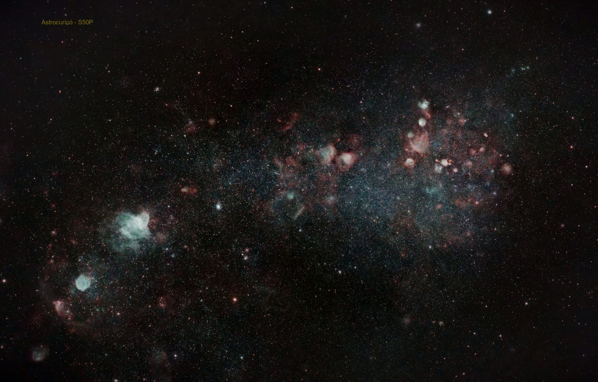
.jpg)
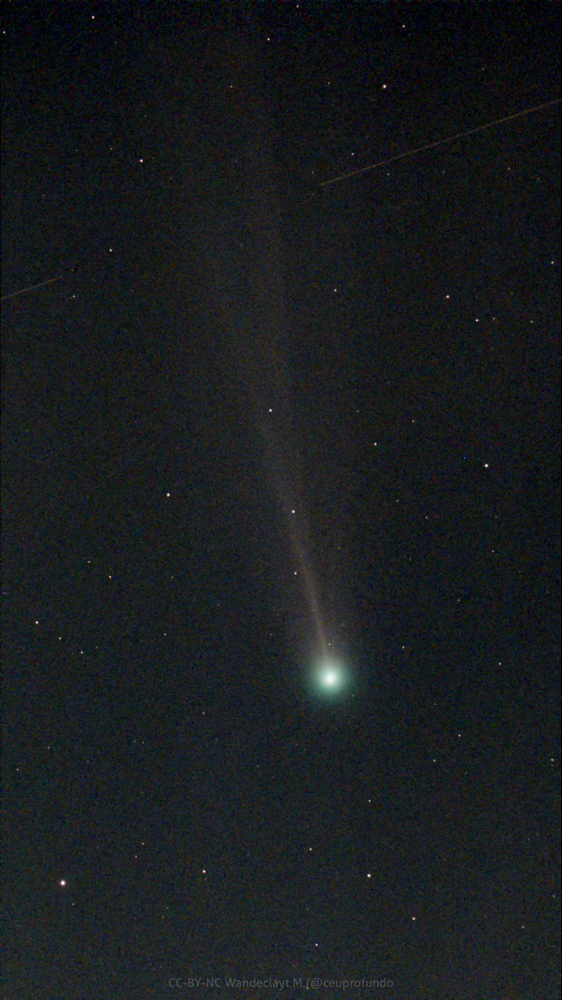
O Projeto Nanotelescópios utiliza telescópios inteligentes (atualmente ZWO Seestar S50) para pesquisa, educação e divulgação em Astronomia, criando ferramentas e atividades para ajudar diferentes públicos a usar facilmente os telescópios, coletar dados, aprender sobre diferentes tópicos de Astronomia, Física e Matemática e/ou ajudar astrônomos a publicar artigos científicos.
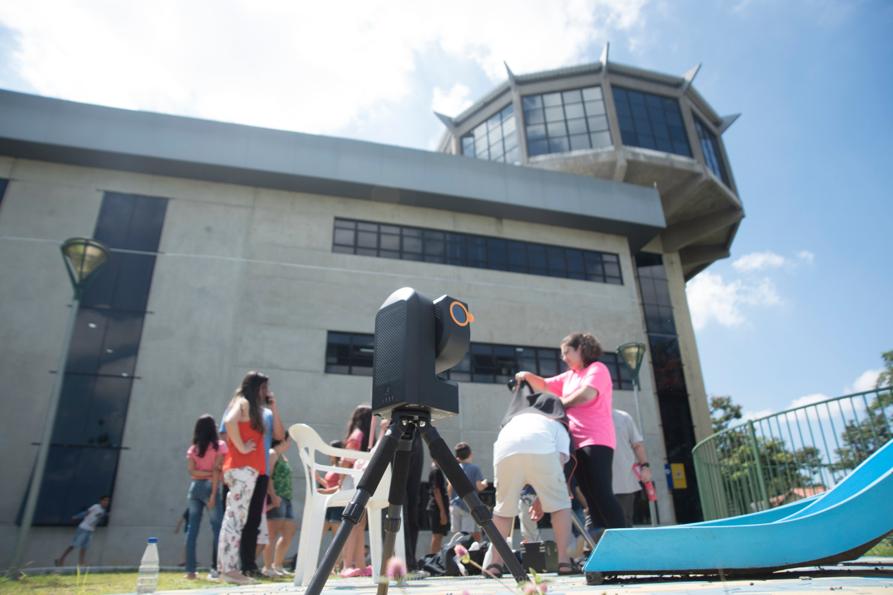
O plano original consistia em dedicar um conjunto de nanotelescópios (cerca de 10 deles) para um levantamento da variabilidade de objetos celestes observados em nossa Galáxia. Outro conjunto de telescópios (outros 10 ou mais) será dedicado à realização de observações por astrônomos amadores e profissionais, ou até mesmo por estudantes ou pelo público em geral (orientados por astrônomos profissionais). O plano inicial de um projeto piloto de ciência cidadã foi iniciado com um número pré-selecionado de alvos de interesse científico escolhidos por nossa equipe (que atualmente são: estrelas variáveis, asteroides, aglomerados abertos, trânsitos). As iniciativas são coordenadas por astrônomos profissionais de diferentes universidades no Brasil, Argentina e Chile.
O principal objetivo de ambas as iniciativas: o levantamento da variabilidade da Galáxia e o projeto de ciência cidadã, é coletar dados que possam ser úteis para o avanço científico e a publicação de artigos, ao mesmo tempo em que servem a propósitos educacionais e de divulgação.
.jpg)
A área a ser coberta pelo primeiro grupo de cerca de 10 telescópios é de 600 graus quadrados do céu, selecionados a partir de campos já observados pelo telescópio robótico brasileiro T80-South e pelo levantamento Southern Photometric Local Universe Survey (S-PLUS). Os campos serão centrados no sistema de coordenadas equatoriais em AR=90° e DEC=−30° para o bojo, e AR=110° e DEC=−30° para o disco de nossa Galáxia. Se esses campos se mostrarem muito povoados para o tamanho de pixel do Seestar S50 (2,4 segundos de arco por pixel), adaptaremos os alvos.
O Projeto Nanotelescópios visa aumentar a visibilidade pública da Astronomia e gerar interesse no uso de telescópios e na exploração mais profunda de tópicos astrofísicos de maneira envolvente, potencialmente atraindo jovens para o estudo da ciência. Também busca aproximar as comunidades do Brasil, Chile e Argentina neste projeto piloto, que é de interesse para astrônomos dos três países. Se for bem-sucedido, a escala e o alcance do projeto serão ampliados no futuro, em particular para escolas no Brasil.
.jpg)
O Projeto Nanotelescópios faz parte de uma iniciativa maior para instalar um telescópio de 2 m no Cerro Tololo Inter-American Observatory, cujo principal objetivo será o acompanhamento de fontes descobertas pelo Vera Rubin Observatory.
Do ponto de vista da educação científica, estudantes podem aprender e desenvolver habilidades em processamento de imagens, análise de dados e nos fundamentos da operação de telescópios. A experiência com formatos digitais de dados, como imagens .fits, expõe os usuários a condições semelhantes às encontradas em pipelines profissionais de processamento de dados, aproximando-os das práticas e métodos utilizados em cenários reais. Com o treinamento adequado, estudantes e professores podem se engajar em temas de pesquisa que oferecem oportunidades únicas.
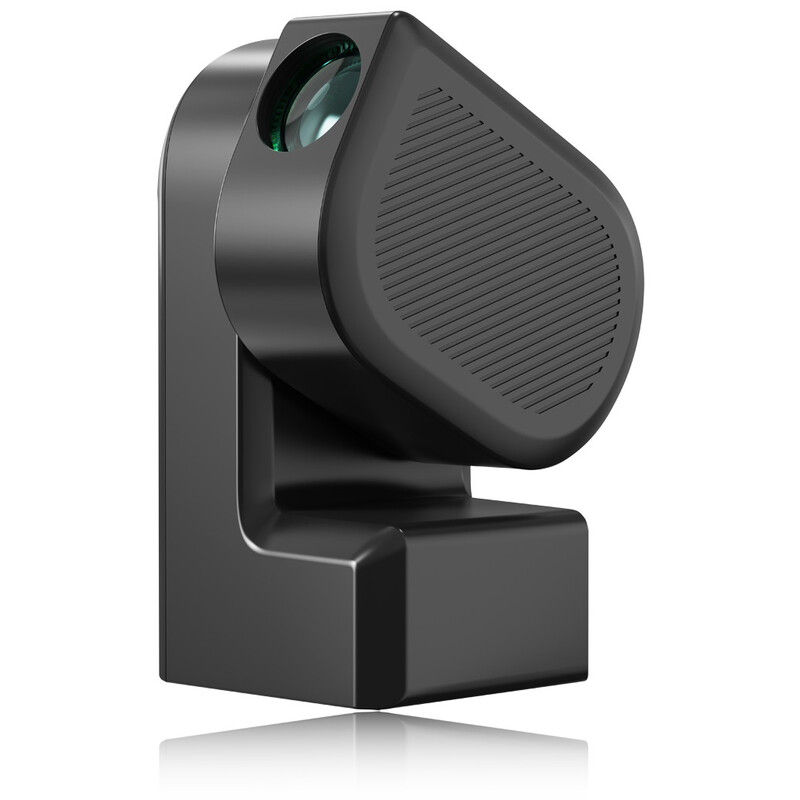
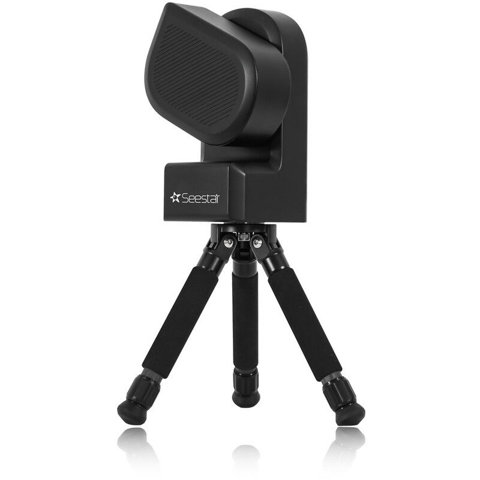
Duas imagens de um mesmo nanotelescópio. Fonte: https://www.seestar.com/products/seestar-s50.
Em resumo, os nanotelescópios oferecem uma excelente relação custo-benefício, e sua facilidade de uso os torna adequados para fins educacionais e de divulgação, bem como para tópicos científicos focados. Acreditamos que eles fornecerão a estudantes e professores ferramentas que antes eram reservadas apenas para profissionais.
Os nanotelescópios (telescópios portáteis), que utilizamos em nosso Projeto, são do tipo óptico. Eles captam imagens no espectro de luz visível (o SeeStar S50 até um pouco além, na faixa entre 380 nm e 1100 nm) e usam associações de lentes para formar imagens de planetas, asteroides, nebulosas, estrelas e aglomerados, por exemplo.
O olho como telescópio
.jpg)
O olho, primeiro instrumento que voltamos ao céu, é uma ferramenta natural para a observação do céu e suas estrelas; no entanto, sozinho, não é suficiente para estudar a fundo astros que compõem a esfera celeste. Aqui entra o papel dos telescópios: não para simplesmente aproximar pontos brilhantes e distigui-los entre o que, hoje, são classificados como planetas, estrelas, asteroides e cometas, mas para captar radiações que a capacidade de visão humana, por si só, não capta e transformá-las em informação que possamos medir e comparar. Essa capacidade de converter o “invisível” em dados faz do telescópio um dos símbolos centrais da Astronomia, e não é incomum que a ideia desta seja atrelada àquele no imaginário popular.
Telescópio óptico
.jpg)
Os telescópios, para além de aumentar o tamanho aparente daquilo para o qual o apontamos, também proporcionam maior poder de resolução (facilitando a distinção de detalhes finos) e permitem exposições mais curtas ou longas do que poderíamos ver sem outro auxílio. A luz (e demais ondas eletromagnéticas) após ser captada é concentrada, convergida em uma região menor e mais próxima ao nosso olho (ou a outro detector). Essa convergência se dá por um mecanismo próprio de cada telescópio e depende do que se quer ver, por quanto tempo, com qual resolução, etc. No caso dos telescópios ópticos, este mecanismo é o conjunto de lentes e espelhos!
Um parâmetro muito importante de qualquer telescópio é sua abertura: o diâmetro de sua lente ou espelho principal. Esse tamanho está diretamente relacionado à capacidade limite do aparelho de detectar objetos mais fracos; de modo geral, quanto maior for, mais detalhes pode-se captar. A qualidade da resolução, no entanto, depende de outros fatores como as condições ambientes e até mesmo dos comprimentos de onda observados.
O telescópio Seestar S50 que utilizamos no projeto tem 50 mm de abertura, com três elementos de lente com o objetivo para corrigir as aberrações. Para saber mais sobre especificações do SeeStar S50, e sobre as condições ambientes propícias para uma boa observação, acesse as sub-abas “Telescópios” e “Campo celeste” em “Fundamentos Básicos”.
Os mapas e catálogos que utilizamos, desde asteroides a galáxias distantes, são em grande parte resultado do varrimento de vastas áreas do céu por grandes telescópios. Além dos espaciais, temos observatórios terrestres instalados em regiões de maior altitude e baixa umidade relativa do ar; nessas a atmosfera apresenta maior transparência e estabilidade (o que evita que as estrelas pareçam sibilar). Regiões montanhosas tais como a de Cerro Pachón, em que o Observatório Vera C. Rubin está situado. Um dos objetivos do Projeto Nanotelescópios é justamente acompanhar as fontes que têm sido descobertas por ele.
Para saber mais
CARROLL, Bradley W.; OSTLIE, Dale A. An Introduction to Modern Astrophysics. 2nd ed. San Francisco: Pearson Addison-Wesley, 2007. ISBN 0-321-44284-9.
Conheça o céu e prepare suas observações com o nanotelescópio Seestar S50.
O céu muda durante a noite e ao longo do ano. Entender esses movimentos nos ajuda a escolher o que observar, a encontrar os objetos e a interpretar as imagens. O Seestar S50 automatiza o apontamento e o acompanhamento de muitos alvos, mas uma boa observação começa com perguntas simples: onde olhar, quando observar e o que podemos aprender?
O que vemos no céu?
.jpg)
Estrelas, planetas, luas, aglomerados, nebulosas e galáxias do céu que podemos explorar. As estrelas das constelações parecem formar desenhos, mas frequentemente estão a distâncias muito diferentes. Para organizar posições, usamos uma esfera celeste imaginária: ela funciona como um mapa das direções para as quais olhamos, não como uma esfera física onde os astros estariam presos.
As constelações são regiões oficialmente delimitadas do céu. Reconhecer o Cruzeiro do Sul ou Órion ajuda na orientação, mas observar um objeto pequeno exige saber sua posição com mais precisão.
Por que o céu muda?
A rotação da Terra faz com que estrelas e outros astros pareçam se deslocar de leste para oeste ao longo da noite. Já o movimento orbital da Terra ao redor do Sol faz com que a parte do céu visível à noite mude com as estações. Por isso, um objeto excelente para observar em determinada época pode estar próximo demais da direção do Sol em outra.


Para planejar a observação, vale consultar um mapa celeste ou aplicativo de planetário configurado para o local e a data. É importante lembrar que o céu visto no Brasil, na Argentina ou no Chile depende também da latitude do observador.
Como encontramos um objeto?
Há duas maneiras especialmente úteis de indicar uma posição no céu. A altura é o ângulo acima do horizonte; o azimute indica a direção ao longo do horizonte, medida do norte para o leste. Essas medidas mudam com o lugar e a hora. Já a ascensão reta e a declinação são coordenadas usadas em catálogos astronômicos, semelhantes à longitude e à latitude de um mapa da Terra.
O Seestar dispõe de recursos de localização automática, mas o observador ainda precisa verificar se o alvo está visível e se não há árvores, prédios ou outros obstáculos na direção escolhida.
Quando vale a pena observar?
Em geral, prefira noites sem nuvens, com boa transparência do céu, e alvos relativamente altos sobre o horizonte. Próximo ao horizonte, a luz atravessa mais atmosfera, o que reduz a qualidade da imagem.
A Lua iluminada e a poluição luminosa dificultam especialmente a observação de galáxias e nebulosas tênues. Para a Lua, entretanto, o próprio brilho lunar não é um problema: muitas crateras ficam particularmente interessantes perto da linha entre a parte iluminada e a escura.
O que registramos com o S50?
O Seestar S50 combina um telescópio compacto de 50 mm com uma câmera e recursos automáticos de observação e composição de imagens. Exposições sucessivas podem ser combinadas para revelar objetos que nossos olhos não percebem diretamente. O resultado depende do céu, do tempo de integração e do processamento: uma imagem obtida com esse equipamento não deve ser confundida com a aparência visual a olho nu.


Como uma imagem vira ciência?
Uma fotografia bonita pode ser também uma medida. Se registrarmos uma estrela em várias noites e compararmos seu brilho com o de estrelas de referência, poderemos investigar variações de luminosidade. Em outras campanhas, imagens sucessivas permitem localizar asteroides em movimento em relação às estrelas de fundo. A repetição das observações, o registro das condições e o tratamento cuidadoso dos dados são essenciais para que o resultado possa ser analisado e comparado.
Uma rede de nanotelescópios em diferentes localidades oferece oportunidades de observação coordenada e de participação de estudantes. Nem todo alvo ou imagem será adequado para uma medida científica; é a escolha de uma pergunta, juntamente com um procedimento consistente, que transforma a observação em pesquisa.
.jpg)
Antes de começar
- Escolha um alvo visível na data e no local da observação. (Para saber a posição no céu, você pode usar: COLOCAR ALGO AQUI)
- Confira previsão do tempo, cobertura de nuvens, posição da Lua e obstáculos no horizonte.
- Prefira observar o alvo quando estiver relativamente alto no céu.
- Verifique: bateria, nivelamento e conexão do equipamento.
- Anote sempre data, local, alvo e condições, para uso e análise posterior; especialmente em campanhas científicas.
Asteroides e Cometas
Com um nanotelescópio, é possível observar ocultações causadas por tipos de asteroides sobre estrelas de fundo, dada sua capacidade de realizar medições sucessivas ao longo do tempo. Algumas ocultações produzem efeitos que podem durar dezenas de segundos, e o registro desses fenômenos de diferentes locais da Terra permite determinar as dimensões e a forma dos objetos de uma maneira que é inviável até mesmo com imageamento direto por grandes instrumentos. No caso de cometas, o imageamento a partir de vários locais de cada país proporciona uma excelente vitrine para a divulgação científica, com material de grande impacto visual.
Ocultações estelares
As observações de fenômenos transitórios, como ocultações estelares, são extremamente importantes para o estudo dos pequenos corpos do Sistema Solar. O Sistema Solar possui diversas regiões povoadas por asteroides e outros objetos, como o Cinturão Principal de Asteroides e o Cinturão de Kuiper. O estudo dessas populações fornece pistas fundamentais sobre a formação e a evolução do Sistema Solar.
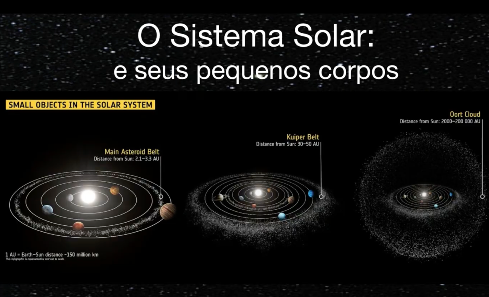
Legenda da imagem.
Os asteroides, na maioria das vezes, aparecem em imagens como simples pontos de luz. Devido ao seu pequeno tamanho e à grande distância, não é possível observar diretamente suas formas a partir da Terra com telescópios comuns. As imagens detalhadas que mostram suas superfícies geralmente são obtidas por missões espaciais (sondas).
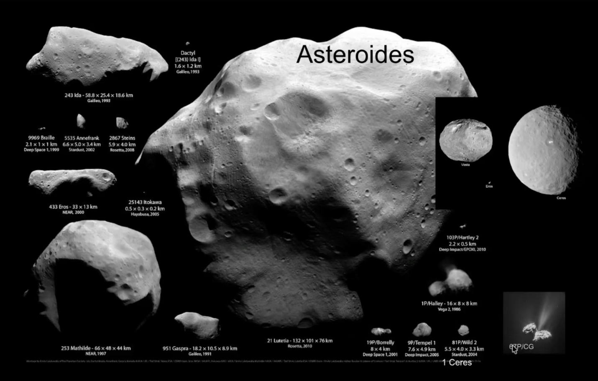
Legenda da imagem.
Que propriedades físicas destes objetos podemos descobrir?
Determinar a forma desses objetos, especialmente os chamados objetos transnetunianos, é um grande desafio, pois eles ocupam uma região muito pequena no céu.
Uma das formas mais eficazes de estudar esses objetos é por meio das ocultações estelares. Esse fenômeno ocorre quando um asteroide passa em frente a uma estrela, bloqueando temporariamente sua luz. Essa “sombra” projetada pelo objeto pode ser observada na Terra. Ao registrar o instante em que a estrela desaparece e reaparece, conseguimos medir a duração da ocultação.
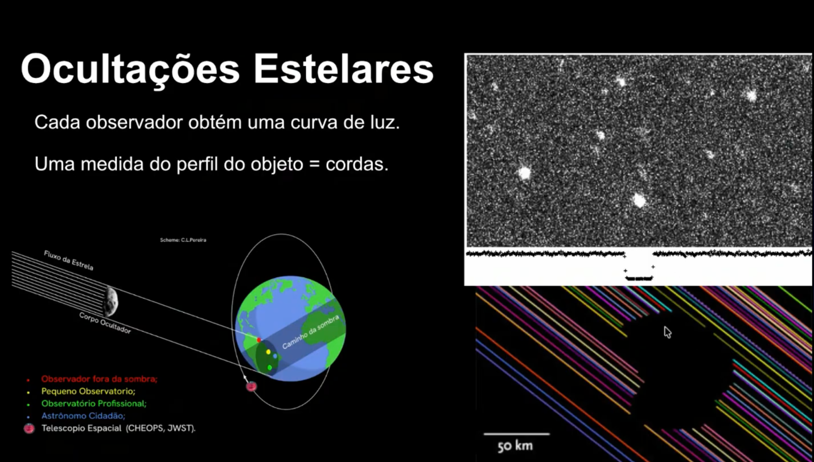
Legenda da imagem.
Quanto maior o número de observações distribuídas geograficamente, mais preciso será o cálculo do tamanho e da forma do asteroide. Esse método permite reconstruir o perfil do objeto com boa precisão.
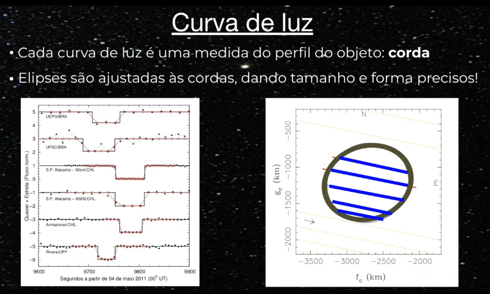
Legenda da imagem.
Por exemplo, já foram realizados estudos em que o tamanho de um asteroide foi determinado com base em observações feitas em diferentes pontos do sul da América do Sul, combinando os dados de vários observadores.
Além do tamanho e da forma, também é possível estimar o albedo do objeto, que é a fração de luz refletida por sua superfície.
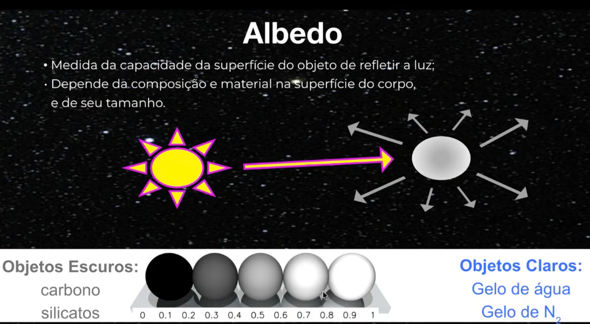
Legenda da imagem.
Combinando o albedo com outras medições, podemos inferir propriedades físicas importantes, como a composição superficial.
Em alguns casos, quando há informações adicionais (como massa estimada, por exemplo, a partir da presença de satélites naturais), é possível também calcular a densidade do objeto, o que fornece pistas sobre sua estrutura interna (se é rochoso, metálico ou mais poroso).
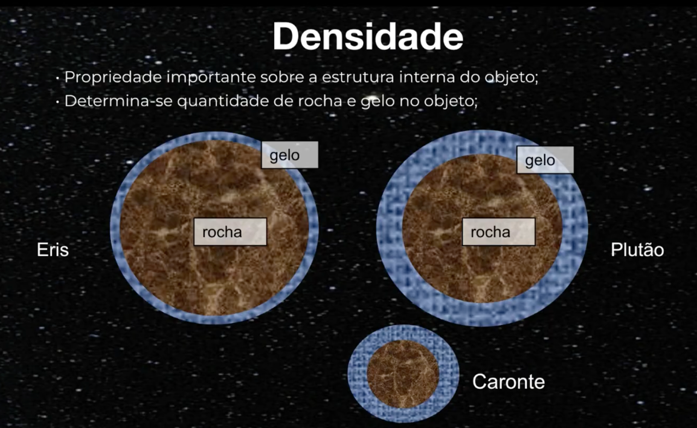
Legenda da imagem.
Ainda mais!
As ocultações estelares também podem levar a descobertas surpreendentes. Em certas situações, observa-se mais de uma queda de brilho durante o mesmo evento, indicando que dois objetos passaram em frente à estrela, o que pode levar à descoberta de novos asteroides.
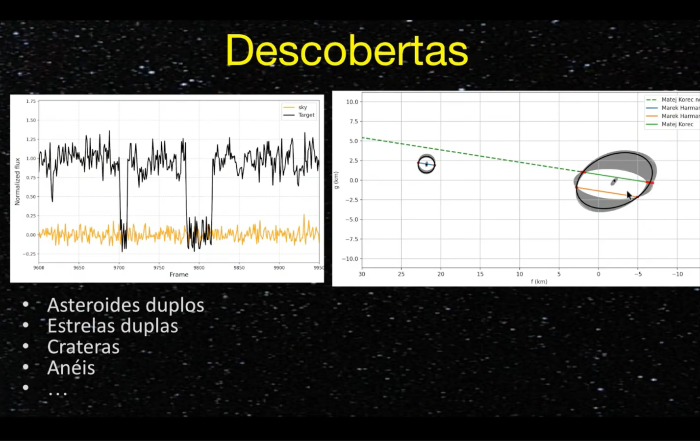
Legenda da imagem.
Além disso, esse tipo de observação pode revelar a existência de estrelas duplas, quando a luz da estrela desaparece em etapas, indicando que há duas fontes próximas sendo ocultadas separadamente.
Outro resultado fascinante é a detecção de anéis ao redor de asteroides. Pequenas quedas de brilho antes e depois da ocultação principal podem indicar a presença de material orbitando o objeto, formando sistemas de anéis; algo que antes se pensava existir apenas ao redor de planetas gigantes.
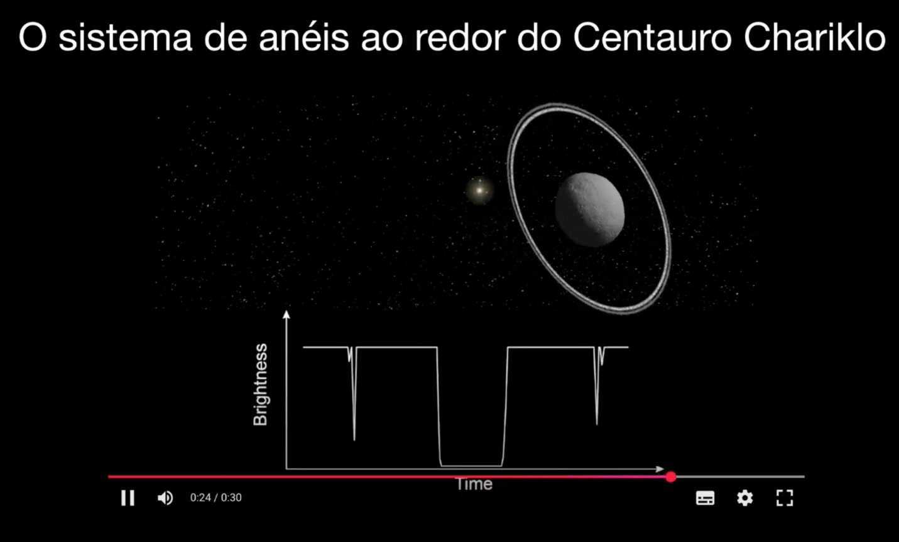
Legenda da imagem.
Várias descobertas foram feitas no Brasil:
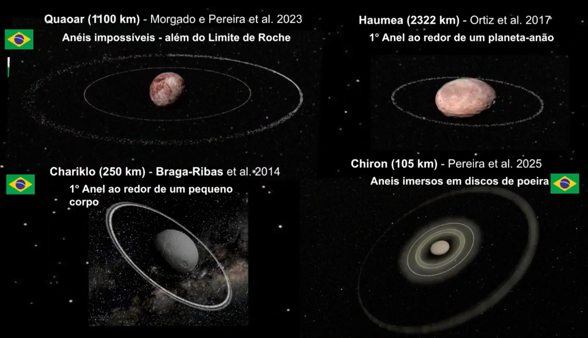
Legenda da imagem.
Embora desafiadora, a observação de trânsitos de exoplanetas que causam uma diminuição no brilho da estrela hospedeira da ordem de alguns por cento também é viável, visto que algumas podem ser visíveis a olho nu! Aqui, a natureza desafiadora dessas observações oferece uma oportunidade para explorar os limites das capacidades dos nanotelescópios, como o S50.
Com agendamento cuidadoso e fotometria diferencial, observadores amadores e estudantes podem detectar sinais de trânsito, contribuindo para o refinamento de efemérides e até mesmo descobrindo novos trânsitos ao redor de estrelas brilhantes do sul.
Estrelas variáveis
Estrelas podem parecer astros imutáveis, porém seu brilho, tamanho e temperatura mudam ao longo de bilhões ou mesmo milhões de anos. Há, ainda, outras em determinado estágio de evolução cuja variação de magnitude luminosa acontece muito rapidamente, entre anos e semanas a horas e minutos! Esse tipo é de interesse para nosso projeto.
A pressão interna dessas estrelas está em constante perturbação. Em decorrência disso, elas possuem um cíclico comportamento de pulsação: expansão e contração, aumentando e diminuindo sua temperatura superficial, entre outros efeitos, e, portanto, aumentando e diminuindo o seu brilho.
Um tipo importante de estrelas variáveis é o das cefeidas! No século passado, em grande parte graças ao trabalho da astrônoma Henrietta Leavitt, verificou-se a existência de uma relação entre período de pulsação (intervalo de tempo em que ocorre a variação de brilho) e a luminosidade intrínseca da estrela cefeida. Ao comparar a quantidade de luz que a estrela emite com a que recebemos aqui na Terra, pode-se estimar a distância que ela deve estar! São assim chamadas “velas padrão” e podem inclusive ser identificadas em outras galáxias; são uma poderosa ferramenta para determinar o tamanho da nossa separação a elas.
Observação de estrelas variáveis
Dadas as qualidades do sensor CMOS usado no nanotelescópio S50, por exemplo, como sensibilidade, baixo ruído e excelente linearidade, é possível acompanhar a variabilidade de objetos pulsantes, sistemas binários eclipsantes e objetos que exibem variações imprevisíveis de brilho. A experiência mostra que, com uma abertura de apenas 50 mm e tempos de integração de vários minutos, é possível observar objetos que são alvos até mesmo de campanhas que utilizam o Telescópio Espacial Hubble.
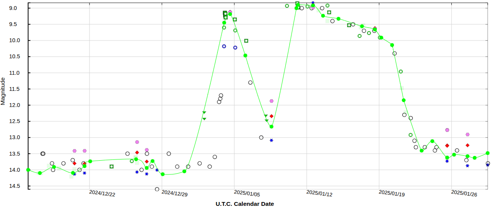
Gráfico com o outburst (surto/erupção) “normal” seguida por um mínimo e um super-outburst no sistema binário (do tipo variável cataclísmica) VW Hyi. Acesse a imagem (e sua legenda) clicando aqui; nela, pode-se exibir graficamente a cobertura das outbursts em diferentes escalas de tempo.
Um exemplo de um fenômeno que, quando observado ao longo do tempo, pode fornecer informações valiosas sobre eventos transitórios é mostrado na figura acima: o sistema binário VW Hydri; em que múltiplas observações foram feitas usando lentes com abertura de 50 mm (semelhante à dos telescópios S50). Trata-se de um sistema binário com transferência de massa entre duas estrelas: uma semelhante ao Sol, mas um pouco mais fria e de menor massa, que transfere material para uma anã branca, um objeto extremamente compacto com massa semelhante à do Sol comprimida em uma esfera do tamanho da Terra.
A transferência de massa ocorre da estrela “normal” para a anã branca, formando um disco de acreção, um fenômeno físico desconhecido até meados do século XX. O sistema apresenta aspectos intrigantes: outbursts (surtos/erupções) com variações de brilho que ultrapassam um fator de 100, causadas pelo aumento de luminosidade do disco de gás. O mecanismo exato por trás desses outbursts ainda é desconhecido. Curiosamente, VW Hydri exibe outbursts “normais” que ocorrem a cada 20 a 30 dias (não exatamente periódicas), bem como “super-outbursts” com intervalos mais longos.
Na figura, pode-se ver um comportamento sem precedentes: o que começou como um outburst normal, durando apenas alguns dias, foi seguido por uma diminuição de brilho e, imediatamente depois, por um que durou quase duas semanas. VW Hyi tem uma posição muito ao sul no céu (com declinação de cerca de -74° no sistema de coordenadas celestes equatoriais), o que a torna um alvo privilegiado para observação no Hemisfério Sul.
Aglomerados Abertos
Supõe-se que estrelas jovens estejam próximas de seus locais de nascimento e tenham velocidades ainda muito semelhantes às iniciais. Nesse contexto, os movimentos próprios estelares são fundamentais para distinguir membros de aglomerados de estrelas de campo.
Com auxílio de um telescópio, o movimento próprio estelar pode ser observado pela mudança na posição celeste de uma estrela ao longo do tempo (em uma aproximação de primeira ordem, os movimentos próprios são calculados a partir de um ajuste linear das posições estelares em função do tempo). Em um gráfico, ao se traçar um diagrama vetorial de movimentos próprios, por exemplo, pode-se distinguir com facilidade as estrelas que compartilham um movimento comum (membros do aglomerado) daquelas com movimentos aleatórios (estrelas de campo, não ligadas gravitacionalmente). Com isso, e a partir combinação dos movimentos próprios dos membros do aglomerado com informações adicionais (como paralaxe e velocidade radial), é possível se reconstruir o movimento 3D e a história de formação estelar do aglomerado na Galáxia.
Propomos, então, observar aglomerados abertos com diferentes propriedades (idade, distância, número de membros etc.) com os nanotelescópios para medir as posições das fontes no campo ao longo do tempo e calcular movimentos próprios. Os movimentos próprios resultantes serão usados para discutir a pertinência ao aglomerado alvo do nosso projeto. Alternativamente, os dados coletados com os telescópios S50 também podem ser combinados com levantamentos astrométricos baseados em solo (ground-based) e com o catálogo Gaia para fornecer movimentos próprios mais precisos com uma base temporal estendida. Essa última abordagem pode nos permitir detectar desvios nos movimentos estelares, por exemplo, devido a binárias (desconhecidas) não detectadas. Além dos movimentos próprios estelares dos membros do aglomerado, podemos usar as mesmas imagens para procurar fontes de movimento rápido no campo (por exemplo, corpos menores do Sistema Solar) e investigar a variabilidade das fontes no campo (como discutido no tópico anterior, Estrelas Variáveis).
Para saber mais
CARROLL, Bradley W.; OSTLIE, Dale A. An Introduction to Modern Astrophysics. 2nd ed. San Francisco: Pearson Addison-Wesley, 2007. ISBN 0-321-44284-9.
Equipe colaboradora do Brasil, Chile e Argentina.
Imagens astronômicas são registros de luz acumulada. Diferentes exposições e filtros revelam brilho, cor, posição e variabilidade. O stacking melhora a razão sinal-ruído.
Tutorial básico do Seestar S50
- Prepare o equipamento e nivele.
- Conecte ao aplicativo e aguarde a inicialização.
- Confirme local, data e hora.
- Escolha um alvo visível e alto.
- Inicie e acompanhe o stacking.
- Registre data, local, alvo, condições e tempo de integração.
- Envie ao hub.
Guia Rápido: Exposições Curtas (Short Exposures)
Para baixar o guia completo, clique em:
Tutorial do Seestar S50 (PDF, 1.7 MB)

Este guia mostra como configurar o app do Seestar S50 para exposições curtas (escalas de ms ou μs) sem aplicativos externos — ideal para alta cadência (trânsitos, ocultações).
SkyAtlas
Conecte ao Seestar; na interface do Modo de Controle (CM), complete as calibrações e toque em Sky Atlas.

Buscar o objeto
Toque na lupa (canto superior direito) para abrir Find Objects.
Digitar o nome
Basta parte do nome (ex: “eta car”). Escolha o objeto (ex: C 92) e toque em GoTo.
Aguardar o apontamento
O processo leva alguns instantes (centralização + calibração) antes das exposições.
Parar e voltar ao CM

Aguarde a primeira imagem melhorada e toque em Stop. Recentralize com os controles de direção se necessário.
Modo “Solar System”
Volte ao CM e toque em Solar System. Escolha Lua/Sol (ou planeta, e depois cancele).
O “truque” do Skip GoTo

Toque em Go Gazing. Na calibração de nível, escolha “Skip Calibration and GoTo”; em seguida, “Skip GoTo and observe”. Isso mantém as opções do modo Solar System disponíveis.
Brilho manual
Em Brightness, escolha Manual — ajusta tempo de exposição real, não só o LUT.
Exposição e ganho

Escolha ms ou μs e ajuste exposição (ex: 30 ms) e ganho (ex: 100).
Modos de observação
- Time-lapse: sequencial com intervalo mínimo de 1 s; ideal para séries. Toque em Raw para salvar os brutos.
- Photo: exposições individuais.
- Video: ~11 fps (Δt ~0,8 s).
Medir é comparar
Na astronomia, e na física em geral, medidas são comparações. Compara-se o brilho de uma estrela em relação a outra, a distância de um asteroide comparado à das estrelas de fundo, ou o tempo de ocultação ao longo de seu trânsito a partir da medida de quantas rotações um ponteiro faz em um relógio, etc.; todas medições, nesse sentido, dependem de um instrumento que medie essa comparação. Entretanto, ele nunca é exato, sempre tem uma resolução máxima e uma incerteza ou erro associado.
Ao longo das observações do projeto Nanotelescópios, você se deparará com isto: uma série de medidas (seja de magnitude de uma estrela variável ou das velocidades de movimento próprio de um membro de um aglomerado aberto, etc.). Um dos papéis da teoria do erro é conceder ferramentas para: decidir o melhor valor para se atribuir a uma grandeza; e descobrir o quanto esse valor se distancia do verdadeiro, que é desconhecido (ou mesmo inacessível). Nesse sentido, a prática de se fazer ciência é indissociável da de quantificar e analisar incertezas, e é o que transforma uma imagem bonita em um resultado científico.
Leitura de instrumentos
Com um instrumento analógico, a medida inclui todos os algarismos que a escala permite ler mais um último, a ser estimado; por exemplo, em uma régua milimetrada é possível identificar cada milímetro e estimar uma fração de milímetro (entre um traço e o outro). Com um instrumento digital, esse último dígito por vezes aparece como uma flutuação, logo se pode escolher o valor intermediário em torno do qual há a oscilação.
Além do mais, todos os instrumentos têm sua própria incerteza (ou limite de erro) relacionada à sua confecção ou calibração; no caso da primeira, deve ser dada pelo fabricante; no caso da segunda, é especificada em manuais ou regulada em softwares.
Mesmo com instrumentos digitais como o telescópio Seestar S50, é preciso levar em consideração erros e entender como funcionam. Saber como o sensor reage à luz, ou qual ganho está sendo usado ou como o software combina as exposições, por exemplo, são essenciais para a tomada de boas medidas.
Erros sistemáticos e estatísticos
Erros sistemáticos são aqueles que são constantes apesar da repetição das medidas. Erros estatísticos (ou aleatórios) são aqueles que não são previsíveis e variam em torno de um valor médio. Caso uma medição tenha apenas esse último tipo de erro, então os resultados terão um valor médio próximo ao exato. Caso, no entanto, além disso, tenha erros sistemáticos, os resultados serão os mesmos, porém deslocados (a mais ou a menos) em relação ao valor médio.
Note que a repetição de medidas deve reduzir o erro estatístico do valor médio obtido, todavia não o sistemático. Este pode ter diversas fontes: as próprias ao instrumento; as condições ambientais (temperatura, umidade, visibilidade, vibrações, etc.); as observacionais, causadas pelo observador (paralaxe da linha de visão, tempo de reação para apertar um temporizador, etc.); as teóricas (utilização de valores errados de constantes, de modelos inadequados aos dados, de efeitos físicos desconsiderados, etc.). Reconhecer essas fontes é importante tanto para a correta interpretação de resultados (e classificação de resíduos), quanto para a preparação de métodos experimentais que possam eliminá-las ou reduzi-las.
Por fim, pode-se classificar o que seriam erros “grosseiros”: ler ou escrever trocado o algarismo da dezena de um número; apertar o botão errado, ou esquecer de apertá-lo; apagar a linha ou coluna de uma tabela; entre outros relacionados ao descuido humano. Principalmente em um projeto como este, de ciência cidadã, em que os dados sobre um mesmo objeto são inseridos por múltiplas pessoas, necessita-se tomar cuidado para os evitar: repita medidas, mantenha sempre suas anotações sobre as observações atualizadas, confira suas contas e analise a consistência de seus resultados.
Acurácia e Precisão
A acurácia (ou exatidão) corresponde a quão perto o resultado está em relação ao valor verdadeiro. A precisão se relaciona à proximidade numérica dos valores de reiteradas medidas. É possível, então, que um instrumento seja preciso, mas não exato; e vice-versa.
Análise de dados
No campo da Astronomia, há uma grande quantidade de dados capturados por telescópios em imagens, espectros, séries temporais, que devem ser processados para que deles possamos extrair informações. Os métodos numéricos utilizados envolvem, por exemplo, a remoção de artefatos, correção de efeitos atmosféricos, calibração de fluxo ou magnitude: é preciso organizar e limpar os valores e conteúdos. Após essa etapa, pode-se escolher uma função ou modelo físico para verificar a sua adequação, ou não, às medidas, a depender do que se quer estudar.
No projeto Nanotelescópios isso pode, em parte, ser feito no hub de dados (acesse a sub-aba “Recursos”).
Para saber mais
VUOLO, José Henrique. Fundamentos da Teoria de Erros. 2. ed. rev. ampl. São Paulo: Edgard Blücher, 1996. pp. 53-94, 113-140, 189-210, 217-226, 235-236. ISBN 85-212-0056-0.